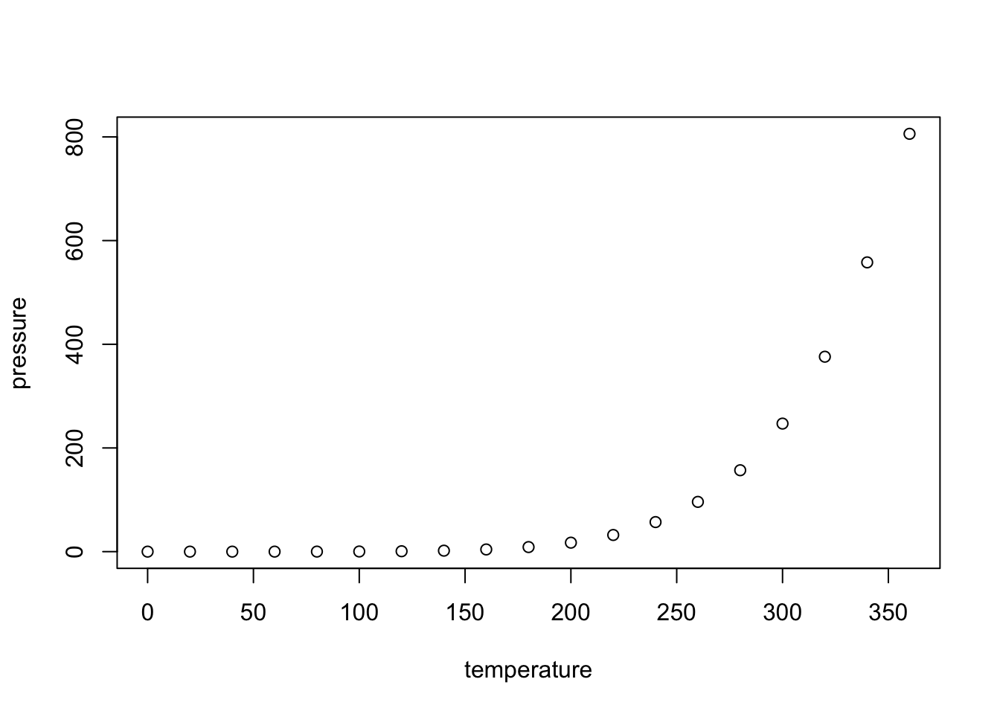
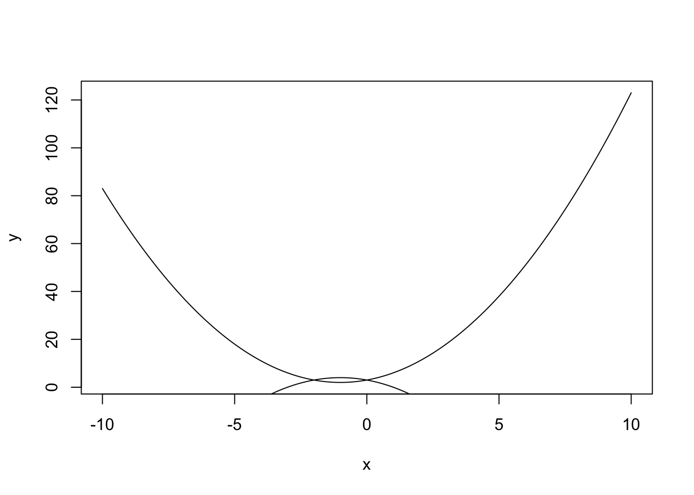
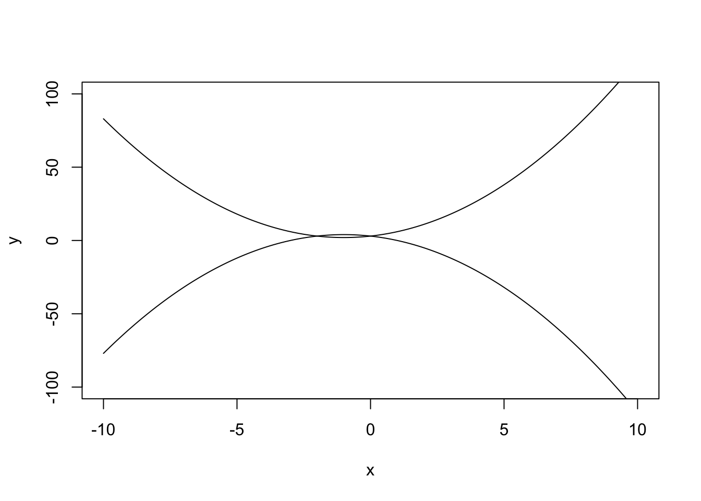
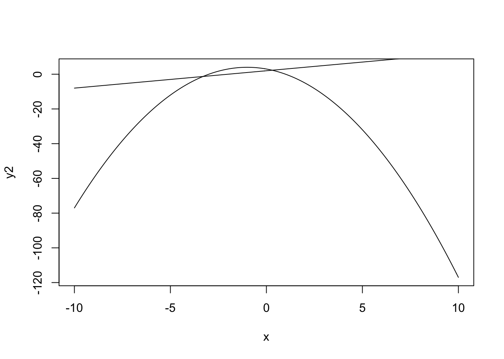

This is an R Markdown document. Markdown is a simple formatting syntax for authoring HTML, PDF, and MS Word documents. For more details on using R Markdown see http://rmarkdown.rstudio.com.
When you click the Knit button a document will be generated that includes both content as well as the output of any embedded R code chunks within the document. You can embed an R code chunk like this:
You can also embed plots, for example:

## [1] -10.0 -9.9 -9.8 -9.7 -9.6 -9.5 -9.4 -9.3 -9.2 -9.1 -9.0
## [12] -8.9 -8.8 -8.7 -8.6 -8.5 -8.4 -8.3 -8.2 -8.1 -8.0 -7.9
## [23] -7.8 -7.7 -7.6 -7.5 -7.4 -7.3 -7.2 -7.1 -7.0 -6.9 -6.8
## [34] -6.7 -6.6 -6.5 -6.4 -6.3 -6.2 -6.1 -6.0 -5.9 -5.8 -5.7
## [45] -5.6 -5.5 -5.4 -5.3 -5.2 -5.1 -5.0 -4.9 -4.8 -4.7 -4.6
## [56] -4.5 -4.4 -4.3 -4.2 -4.1 -4.0 -3.9 -3.8 -3.7 -3.6 -3.5
## [67] -3.4 -3.3 -3.2 -3.1 -3.0 -2.9 -2.8 -2.7 -2.6 -2.5 -2.4
## [78] -2.3 -2.2 -2.1 -2.0 -1.9 -1.8 -1.7 -1.6 -1.5 -1.4 -1.3
## [89] -1.2 -1.1 -1.0 -0.9 -0.8 -0.7 -0.6 -0.5 -0.4 -0.3 -0.2
## [100] -0.1 0.0 0.1 0.2 0.3 0.4 0.5 0.6 0.7 0.8 0.9
## [111] 1.0 1.1 1.2 1.3 1.4 1.5 1.6 1.7 1.8 1.9 2.0
## [122] 2.1 2.2 2.3 2.4 2.5 2.6 2.7 2.8 2.9 3.0 3.1
## [133] 3.2 3.3 3.4 3.5 3.6 3.7 3.8 3.9 4.0 4.1 4.2
## [144] 4.3 4.4 4.5 4.6 4.7 4.8 4.9 5.0 5.1 5.2 5.3
## [155] 5.4 5.5 5.6 5.7 5.8 5.9 6.0 6.1 6.2 6.3 6.4
## [166] 6.5 6.6 6.7 6.8 6.9 7.0 7.1 7.2 7.3 7.4 7.5
## [177] 7.6 7.7 7.8 7.9 8.0 8.1 8.2 8.3 8.4 8.5 8.6
## [188] 8.7 8.8 8.9 9.0 9.1 9.2 9.3 9.4 9.5 9.6 9.7
## [199] 9.8 9.9 10.0## [1] 83.00 81.21 79.44 77.69 75.96 74.25 72.56 70.89 69.24 67.61
## [11] 66.00 64.41 62.84 61.29 59.76 58.25 56.76 55.29 53.84 52.41
## [21] 51.00 49.61 48.24 46.89 45.56 44.25 42.96 41.69 40.44 39.21
## [31] 38.00 36.81 35.64 34.49 33.36 32.25 31.16 30.09 29.04 28.01
## [41] 27.00 26.01 25.04 24.09 23.16 22.25 21.36 20.49 19.64 18.81
## [51] 18.00 17.21 16.44 15.69 14.96 14.25 13.56 12.89 12.24 11.61
## [61] 11.00 10.41 9.84 9.29 8.76 8.25 7.76 7.29 6.84 6.41
## [71] 6.00 5.61 5.24 4.89 4.56 4.25 3.96 3.69 3.44 3.21
## [81] 3.00 2.81 2.64 2.49 2.36 2.25 2.16 2.09 2.04 2.01
## [91] 2.00 2.01 2.04 2.09 2.16 2.25 2.36 2.49 2.64 2.81
## [101] 3.00 3.21 3.44 3.69 3.96 4.25 4.56 4.89 5.24 5.61
## [111] 6.00 6.41 6.84 7.29 7.76 8.25 8.76 9.29 9.84 10.41
## [121] 11.00 11.61 12.24 12.89 13.56 14.25 14.96 15.69 16.44 17.21
## [131] 18.00 18.81 19.64 20.49 21.36 22.25 23.16 24.09 25.04 26.01
## [141] 27.00 28.01 29.04 30.09 31.16 32.25 33.36 34.49 35.64 36.81
## [151] 38.00 39.21 40.44 41.69 42.96 44.25 45.56 46.89 48.24 49.61
## [161] 51.00 52.41 53.84 55.29 56.76 58.25 59.76 61.29 62.84 64.41
## [171] 66.00 67.61 69.24 70.89 72.56 74.25 75.96 77.69 79.44 81.21
## [181] 83.00 84.81 86.64 88.49 90.36 92.25 94.16 96.09 98.04 100.01
## [191] 102.00 104.01 106.04 108.09 110.16 112.25 114.36 116.49 118.64 120.81
## [201] 123.00
Note that the echo = FALSE parameter was added to the code chunk to prevent printing of the R code that generated the plot.